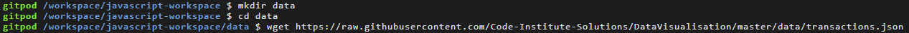

D3 is a graphics library not only for charts. DC (Dimensional Charting) this sits on top on d3 and uses d3 to create charts. Another CDN is crossfilter we use this to visualise different pieces of information from our data and make it more interactive.
It's important they go in the head of your html in this order.
Crossfilter allows you to work with data using whats called two way binding var ndx = crossfilter(transactionsData);
We use dc to pluck() data from our data set.
Instead of having your data in an array within the html file you can pull your data from an external source.
We start with queue() because this refers to the CDN queue.
<script type="text/javascript" src="https://cdnjs.cloudflare.com/ajax/libs/d3-queue/3.0.7/d3-queue.min.js"></script>
This allows us to defer calling a function until the data is ready, we are defering json content and the location of that file in the parameter
Now when the data is ready we use the await to call the function makeGraphs(), one of two things will happen the data will return or we'll get an error.
Best to show progresstion over time.